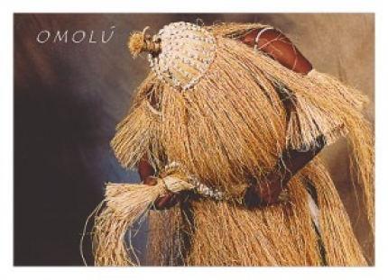

Jonville,Quarta-feira, 27 de Fevereiro de 2013
 Lendas
Lendas
Warning: Invalid argument supplied for foreach() in E:\domains\accaia.org\wwwroot\basev2\includes\coluna1.php on line 58
____________
LendasWarning: Invalid argument supplied for foreach() in E:\domains\accaia.org\wwwroot\basev2\includes\coluna1.php on line 58
____________

Omolu
Òrìsà da Continuidade da Existência !!! Obaluaiê era muito mulherengo e não obedecia a nenhum mandamento que fosse. Numa data importante, Orunmilá advertiu-o que se abstivesse de sexo, o que ele não cumpriu. Naquele mesmo dia possuiu uma de suas mulheres. Na manhã seguinte despertou com o corpo coberto de chagas. Suas mulheres pediram a Orunmilá que intercedesse junto a Olodumare, mas este não perdoou Obaluaiê, que morreu em seguida. Orunmilá usando o mel de Osun, despejou-o por sobre todo o palácio de Olodumare. Este, deliciado, perguntou a Orunmilá quem havia despejado em sua casa tal iguaria. Orunmilá disse-lhe que havia sido uma mulher. Todas as divindades femininas foram chamadas, mas faltava Osun, que confirmou ao chegar que era seu aquele mel. Olodumare pediu-lhe mais, ao que Osun lhe fez uma proposta. Osun daria a ele todo o mel que quisesse, desde que ressuscitasse Obaluaiê. Olodumare aceitou a condição de Osun, e Obaluaiê saiu da terra vivo e são. Chegando de viagem à aldeia onde nascera, Omulu viu que estava acontecendo uma festa com a presença de todos os Orisás. Omulu não podia entrar na festa, devido à sua medonha aparência. Então ficou espreitando pelas frestas do terreiro. Ogum, ao perceber a angústia do Orisá, cobriu-o com uma roupa de palha, com um capuz que ocultava seu rosto doente, e convidou-o a entrar e aproveitar a alegria dos festejos.
Apesar de envergonhado, Omulu entrou, mas ninguém se aproximava dele. Iansã tudo acompanhava com o rabo do olho. Ela compreendia a triste situação de Omulu e dele se compadecia. Iansã esperou que ele estivesse bem no centro do barracão. O xirê estava animado. Os Orisás dançavam alegremente com suas Iansã chegou então bem perto dele e soprou suas roupas de palha, levantou-lhe as palhas que cobriam sua pestilência. Nesse momento de encanto e ventania, as feridas de Omulu pularam para o alto, transformadas numa chuva de pipocas, que se espalharam brancas pelo barracão. Omulu, o deus das doenças, transformara-se num jovem, num jovem belo e encantador.
Omulu e Iansã Igbalé tornaram-se grandes amigos e reinaram juntos sobre o mundo dos espíritos dos mortos, partilhando o poder único de abrir e interromper as demandas dos mortos sobre os homens Obaluayê havia levado seus guerreiros aos quatro cantos do mundo. Uma ferida feita por suas flechas tornava as pessoas cegas, surdas ou mancas. Obaluyê-Xapanan chegou assim, ao Daomé, batendo e dizimando seus inimigos, e pôs-se a massacrar e a destruir tudo o que encontrava à sua frente. Os daomeanos, porém, tendo consultado um Babalaô aprenderam a acalmar Obaluayê com oferenda de pipocas. O Orisá, tranquilizado pelas atenções, mandou-os construir um palácio, onde ele passaria a morar.
Apesar de envergonhado, Omulu entrou, mas ninguém se aproximava dele. Iansã tudo acompanhava com o rabo do olho. Ela compreendia a triste situação de Omulu e dele se compadecia. Iansã esperou que ele estivesse bem no centro do barracão. O xirê estava animado. Os Orisás dançavam alegremente com suas Iansã chegou então bem perto dele e soprou suas roupas de palha, levantou-lhe as palhas que cobriam sua pestilência. Nesse momento de encanto e ventania, as feridas de Omulu pularam para o alto, transformadas numa chuva de pipocas, que se espalharam brancas pelo barracão. Omulu, o deus das doenças, transformara-se num jovem, num jovem belo e encantador.
Omulu e Iansã Igbalé tornaram-se grandes amigos e reinaram juntos sobre o mundo dos espíritos dos mortos, partilhando o poder único de abrir e interromper as demandas dos mortos sobre os homens Obaluayê havia levado seus guerreiros aos quatro cantos do mundo. Uma ferida feita por suas flechas tornava as pessoas cegas, surdas ou mancas. Obaluyê-Xapanan chegou assim, ao Daomé, batendo e dizimando seus inimigos, e pôs-se a massacrar e a destruir tudo o que encontrava à sua frente. Os daomeanos, porém, tendo consultado um Babalaô aprenderam a acalmar Obaluayê com oferenda de pipocas. O Orisá, tranquilizado pelas atenções, mandou-os construir um palácio, onde ele passaria a morar.
Notícias...
----------------------------------
Copyright © 2011- Todos direitos reservados à ACCAIA
Rua Arildo Jose da Silva,99 - Itinga Joinville - SC - Cep: 89245000
::: Suporte 04791261971 :::